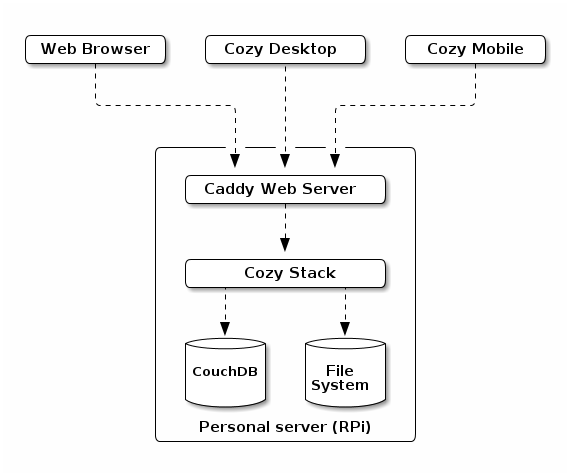
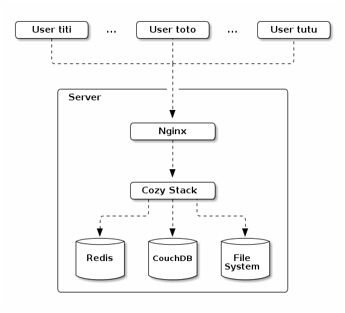
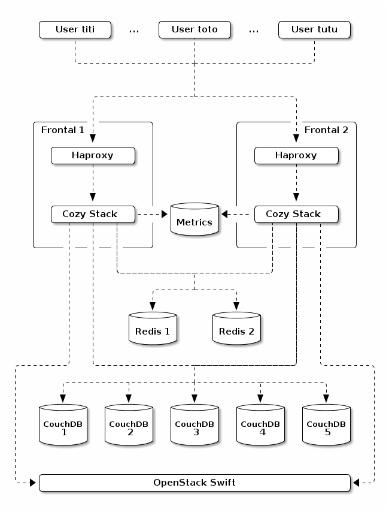

This document was written in september 2016.
Cozy Stack Architecture¶
What is Cozy?¶
Cozy is a personal platform as a service with a focus on data. Cozy can be seen as 4 layers, from inside to outside:
- A place to keep your personal data
- A core API to handle the data
- Your web apps, and also the mobile & desktop clients
- A coherent User Experience.
It’s also a set of values: Simple, Versatile, Yours. These values mean a lot for Cozy in all aspects. From an architectural point of view, it declines to:
- Simple to deploy and understand, not built as a galaxy of optimized microservices managed by kubernetes that only experts can debug.
- Versatile, can be hosted on a Raspberry Pi for geeks to massive scale on multiple servers by specialized hosting. Users can install apps.
- Yours, you own your data and you control it. If you want to take back your data to go elsewhere, you can.
Overview¶
The architecture of Cozy is composed of:
- A reverse proxy
- The cozy stack
- A CouchDB instance to persist the JSON documents
- A space for storing files
- Optionally, Redis for caching and synchronization
- Optionally, a metrics server.
All of this can run on a personal server, self-hosted at home, like a Raspberry Pi:

But it’s also possible to deploy a cozy on a more powerful server in order to host dozens of cozy instances (an association for example). It will looks like this:

And even to scale to thousands of cozy instances on a server farm, with high availability:

This elasticity comes with some constraints:
- Most applications are run in the browser, not in the server.
- What must run on the server is mutualized inside the cozy stack.
- The cozy stack is stateless.
- The data is stored in couchdb and a space for files.
- A couchdb database is specific to an instance (no mix of data from 2 users in the same database).
Reverse proxy¶
The reverse proxy is here to accept HTTPS connexions and forward the request to the cozy stack. It’s here mainly to manage the TLS part and binding a port < 1024 without needing to launch the cozy stack as root. And it’s better if http/2 is supported, as it will make the web interface to load faster.
The Cozy Stack¶
The Cozy Stack is a single executable. It can do several things but its most important usage is starting an HTTP server to serve as an API for all the services of Cozy, from authentication to real-time events. This API can be used on several domains. Each domain is a cozy instance for a specific user (“multi-tenant”).
Redis¶
Redis is optional when there is a single cozy stack running. When available, it is used to synchronize the Cozy Stacks: distributed locks for special operations like installing an application, queues for recurrent jobs, etc. As a bonus, it can also be used to cache some frequently used documents.
Databases¶
The JSON documents that represent the users data are stored in CouchDB, but they are not mixed in a single database. We don’t mix data from 2 users in the same database. It’s easier and safer to control the access to the data by using different databases per user.
But we think to go even further by splitting the data of a user in several databases, one per document type. For example, we can have a database for the emails of a user and one for her todo list. This can simplify the implementation of permissions (this app has access to these document types) and can improve performance. CouchDB queries work with views. A view is defined ahead of its usage and is built by CouchDB when it is requested and is stale, i.e. there were writes in the database since the last time it was updated. So, with a single database per user, it’s possible to experience lag when the todolist view is requested after fetching a long list of emails. By splitting the databases per doctypes, we gain on two fronts:
- The views are updated less frequently, only when documents of the matching doctypes are written.
- Some views are no longer necessary: those to access documents of a specific doctypes.
There are downsides, mostly:
- It can be harder to manage more databases.
- It’s no longer possible to use a single view for documents from doctypes that are no longer in the same database.
We think that we can work on that and the pros will outweigh the cons.
Metrics¶
The Cozy Stack can generate some metrics about its usage (the size of the files transfered, the number of opened connexions, the number of requests to redis, etc.) and export them to a metrics backend. It will help identify the bottlenecks when scaling to add more users.
The Warp 10 Platform looks like a good candidate for this.
Glossary¶
Instance¶
An instance is a logical space owned by a user and identified by a domain. For example, zoe.cozycloud.cc can be the cozy instance of Zoé. This instance has a space for storing files and some CouchDB databases for storing the documents of its owner.
Environment¶
When creating an instance, it’s possible to give an environment, dev, test
or prod. The default apps won’t be the same on all environments. For example,
in the dev environment, some devtools will be installed to help the front
developers to create their own apps.
Cozy Stack Build Mode¶
The cozy stack can run in several modes, set by a UNIX environment variable:
production, the defaultdevelopment, for coding on the cozy stack.
This mode is set when compiling the cozy-stack. It is used to show more or less logs, and what is acceptable to be displayed in errors.
Even if the Cozy Stack Build Mode and Environment have similar values, they are not the same. The Cozy Stack Mode will be used by core developers to hack on the cozy stack. The environment will be used by front developers to hack on cozy apps.
Services¶
The cozy stack came with several services. They run on the server, inside the golang process and have an HTTP interface.
Authentication /auth¶
The cozy stack can authenticate the owner of a cozy instance. This can happen in the classical web style, with a form and a cookie, but also with OAuth2 for remote interactions like cozy-mobile and cozy-desktop.
Applications /apps¶
It’s possible to manage serverless applications from the cozy stack and serve them via cozy stack. The stack does the routing and serve the HTML and the assets for the applications.
The assets of the applications are installed in the virtual file system. On the big instances, it means that even if it is the frontal 1 that installs the application, frontal 2 will still be able to serve the application by getting its assets from Swift.
It will be possible to install applications from several sources (git, mercurial, npm or even just a tarball). Also, we want to offer two channels for our official apps: one with a stable and well tested release, and one with more frequent updates for our more adventurous users.
More informations here.
Data System /data¶
CouchDB is used for persistence of JSON documents. The data service is a layer on top of it for routing the requests to the corresponding CouchDB database and checking the permissions.
In particular, a serverless application can declare some contexts and access data in those contexts even if it’s not the owner of the cozy instance that access it. For example, the owner of a cozy can create a photo album with a selection of photos. This album can then be associated to a context to be shared with friends of the owner. These friends can access the album and see the photos, but not anonymous people.
More informations here.
Virtual File System /files¶
It’s possible to store files on the cozy, including binary ones like photos and movies, thanks to the virtual file system. It’s a facade, with several implementations, depending on where the files are effectively stored:
- In a directory of a local file system (easier for self-hosted users)
- Swift from Open Stack (convenient for massive hosting)
- And more storage providers, like minio, later.
The range of possible operations with this endpoint goes from simple ones, like uploading a file, to more complex ones, like renaming a folder. It also ensure that an instance is not exceeding its quota, and keeps a trash to recover files recently deleted.
More informations here.
Sharing /sharings¶
Users will want to share things like calendars. This service is there for sharing JSON documents between cozy instances, with respect to the access control.
Jobs /jobs¶
The cozy stack has queues where job descriptions can be put. For example, a job can be to fetch the latest bills from a specific provider. These queues can be consumed by external workers to complete the associated jobs.
We can imagine having a media worker that extract thumbnails from photos and videos. It will fetch jobs from a media queue and each job description will contain the path to the photo or video from which the thumbnail will be extracted.
There is also a scheduler that acts like a crontab. It can add jobs at recurrent time. For example, it can add a job for fetching github commits every hour.
Later, we can dream about having more ways to create jobs (webhooks, on document creation) and make them communicate. With a web interface on that, it can become a simplified Ifttt.
Sync /sync¶
This endpoint will be for synchronizing your contacts and calendars by using standard methods like caldav and carddav. Later, we hope to support also Webdav and RemoteStorage.
Settings /settings¶
Each cozy instance has some settings, like its domain name, its language, the name of its owner, the background for the home, etc.
Notifications /notifications¶
The applications can put some notifications for the user. That goes from a reminder for a meeting in 10 minutes to a suggestion to update your app.
Real-time /realtime¶
This endpoint can be used to subscribe for real-time events. An application that shows items of a specific doctype can listen for this doctype to be notified of all the changes for this doctype. For example, the calendar app can listen for all the events and if a synchronization with the mobile adds a new event, the app will be notified and can show this new event.
Error catcher /errors¶
Client-side applications can have some JS errors. By sending the error, with its backtrace, to this endpoint, it will be kept in a logfile to help the developers debug the application later. We should look at the airbrake API and probably be compatible with it to avoid redeveloping JS code to send the errors.
Proxy /proxy¶
It can be useful for client-side apps to get data from public APIs. But, sometimes, these APIs don’t have CORS enabled. A proxy endpoint can be a simple but effective solution for these cases.
Status /status¶
It’s here just to say that the API is up and that it can access the CouchDB databases, for debugging and monitoring purposes.
Workers¶
The workers take jobs from the queues and process them.
Fetch emails /jobs/mailbox¶
It fetches a mailbox to synchronize it and see if there are some new emails.
Payload: the mailbox
Send email /jobs/sendmail¶
It connects to the SMTP server to send an email.
Payload: mail account, recipient, body, attachments
Extract metadata /jobs/metadata¶
When a file is added or updated, this worker will extract its metadata (EXIF for an image, id3 for a music, etc.)
Payload: the filepath
Konnectors /jobs/konnector¶
It synchronizes an account on a remote service (fetch bills for example).
Payload: the kind of konnector, the credentials of the account and some optional parameters (like the folder where to put the files)
Registry /jobs/registry¶
It updates the list of available applications.
Payload: none
Indexer /jobs/indexer¶
When a JSON document is added, updated or deleted, this worker will update the index for full text search. Bleve looks like a good candidate for the indexing and full text search technology.
Payload: the doctype and the document to index
Serverless apps¶
Home /apps/home¶
It’s where you land on your cozy and launch your apps. Having widgets to display informations would be nice too!
Store (was marketplace) /apps/store¶
You can install new apps here.
Settings (was My apps) /apps/settings¶
It’s a list of your installed apps and devices, and you can configure some settings like your email address.
Collect (was konnectors) /apps/collect¶
You can configure new accounts, to fetch data from them, and see the already configured accounts.
Devtools /apps/devtools¶
Some tools for the developpers of applications only: an API console, documentation, logs of the permission checks, etc.
Contacts /apps/contacts¶
Manage your contact books.
Calendar /apps/calendar¶
Manage your events and alarms.
Drive /apps/drive¶
A web interface to browse your files.
Photos /apps/photos¶
Organize your photos and share them with friends.
Todo list /apps/todo¶
A task manager to never forgot what you should do.
Onboarding /apps/onboarding¶
Start your cozy and setup your accounts.
Clients¶
Mobile¶
Cozy-mobile is an application for android and iOS for synchronizing files, contacts and calendars between the phone and the cozy instance.
Desktop¶
Cozy-desktop is a client for Linux, OSX and windows that allows to sync the files in a cozy instance with a laptop or desktop.
Guidelines¶
The Go Programming Language¶
Go (often referred as golang) is an open source programming language created at Google in 2007. It has nice properties for our usage:
- Simplicity (the language can be learned in weeks, not years).
- A focus on productivity.
- Good performance.
- A good support of concurrency with channels and goroutines.
Moreover, Go is used by a lot of companies, is in the Top 10 of the most used languages and has some known open source projects: docker, kubernetes, grafana, syncthing, influxdb, caddy, etc. And it works on the ARM platforms.
Go has some tools to help the developers to format its code (go fmt), retrieve
and install external packages (go get), display documentation (godoc), check
for potential errors with static analysis (go vet), etc. Most of them can be
used via gometalinter, which is
nice for continuous integration.
So, we think that writing the Cozy Stack in Go is the right choice.
Repository organisation¶
├── assets The assets for the front-end
│ ├── images The images
│ ├── scripts The javascript files
│ ├── styles The CSS files
│ └── templates The HTML templates
├── cmd One .go file for each command of the cozy executable
├── docs Documentation, including this file
├── pkg One sub-directory for each golang package
├── scripts Some shell scripts for developers and testing
└── web One sub-directory for each of the services listed above
Rest API¶
We follow the best practices about Rest API (using the right status codes, HTTP verbs, organise code by resources, use content-negociation, etc.). When known standards make sense (caldav & carddav for example), use them. Else, JSON API is a good default.
The golang web framework used for the cozy stack is Echo.
HTTP status codes¶
There are some HTTP status codes that are generally used in the API:
- 200 OK, when everything is OK
- 201 Created, when a resource was created
- 204 No Content, when a resource was deleted
- 400 Bad Request, when the request has some unknown parameters and the request body is not in the expected format
- 401 Unauthorized, when the user is not authenticated
- 403 Forbidden, when the permissions forbid this action
- 404 Not Found, when the resouce can’t be found
- 500 Internal Server Error, when a bug occurs
- 503 Service Unavailable, when the stack, CouchDB, Redis or Swift is unavailable.
DocTypes¶
Each JSON document saved in CouchDB has a field docType that identify the kind
of thing it is. For example, a contact will have the docType io.cozy.contacts,
and in the cozy-doctypes repository, there will be a contacts JSON file inside
it that describes this doctype:
- What are the mandatory and optional fields?
- What is the type (string, integer, date) of the fields?
- Is there a validation rule for a field?
- How the fields can be indexed for full text search?
- What is the role of each field (documentation)?
This description can be used by any cozy client library (JS, Golang, etc.) to generate some models to simplify the use of documents of this doctype.
When a docType has a lot of logic (calendar events for example), a JS class should be shared between the several client-side apps that use this docType, in order to avoid recoding this logic in each application.
Import and export¶
You will stay because you can leave.
An important promise of Cozy is to give back to the users the control of their data. And this promise is not complete with a way to export the data to use it somewhere else.
The Cozy Stack will offer an export button that gives a tarball to the user with the full data. She can then import it on another instance for example. It should also be possible to use the data outside of Cozy. So, the format for the tarball should be as simple as possible and be documented. Of course, when it’s possible, we will use open formats.
How to contribute?¶
Cozy’s DNA is fundamentally Open Source and we want our community to thrive. Having contributions (code, design, translations) is important for us and we will try to create the favorable conditions to support it.
Adding a new konnector¶
Adding a konnector is easy for someone who knows JavaScript. The repository has already a lot of pull requests by external contributors. The wiki has documentation to explain the first steps of creating a new konnector. 3 active contributors have been promoted to the maintainers team and can merge the pull requests. We have done workshops to help new developers code their first konnector and we will keep doing it.
Creating a new application¶
One of the goals of the new architecture is to make it easier for developers to write new apps. It means having a good documentation, but also some devtools to help:
- The
cozyexecutable will have a command to setup a new project. - The devtools on the cozy interface will give documentation about the doctypes, help explore the Rest API, and check if the permissions are OK.
cozy-uiwill make it easy to reuse some widgets and offer an application with a style coherent to the cozy identity.- Some docTypes with heavy logic will be available as JS classes to be reused in the apps.
Reporting a bug or suggesting a new feature¶
We are listening to our users. The forum is here to discuss on many subjects, including how the applications are used. The issues on github are a good place for bug tracking.
Translating to a new language¶
We will keep having internationalization for our applications and the translations are maintained on transifex by the community. Translating to a new language, or reviewing an existing one, is really appreciated.
FAQ¶
Does the current konnectors in nodejs will be lost?
No, they won’t. The business logic to scrap data from the many sources will be kept and they will be adapted to fit in this new architecture. It is explained how we will do that here.
So, it’s not possible to have a custom application with a server part, like the lounge IRC client?
We want to support this use case, just not on the short term. It’s not clear how we can do that (while not weakening the security). One idea is to run the applications in a different server, or maybe in docker.
How to install and update cozy?
The Cozy Stack will have no auto-update mechanism. For installing and updating it, you can use the classical ways:
- Using a package manager, like apt for debian & ubuntu.
- Using an official image for Raspberry Pi (and other embedded platforms).
- Using the image and services of an hosting company.
- Or compiling and installing it manually if you are really brave ;-)
How to add a cozy instance to a farm?
- Choose a (sub-)domain and configure the DNS for this (sub-)domain.
- Configure the reverse-proxy to accept this (sub-)domain.
- Use the
cozyexecutable to configure the cozy stack.
How to migrate from the nodejs cozy to this new architecture for cozy?
- Export the data from the nodejs cozy (we need to add a button in the web interface for that in the coming months).
- Install the new cozy.
- Import the data.
Please note that we don’t support a continuous replication method that will enable to use both the nodejs and the new architecture at the same time. It looks too complicated for a temporary thing.
How to backup the data?
There are 2 sensitive places with data:
- In CouchDB.
- on the place used for the Virtual File System (a directory on the local filesystem, or in Swift).
You can use the tools of your choice to backup these 2 locations. The good old rsync works fine (CouchDB files are append-only, except when compaction happens, so it’s friendly to rsync).
It’s highly recommended to have an automated backup, but sometimes it can be useful to have a way to backup manually the data. The “export data” button in the web interface give a tarball that can be used to transfer your data from one instance to another, and so, it can be used as a backup.
Aren’t microservices better for scaling?
Yes, it’s often easier to scale by separating concerns, and microservices is a way to achieve that. But, it has some serious downsides:
- It takes more memory and it’s probably a no-go for Raspberry Pi.
- It’s more complicated for a developper to install the whole stack before coding its application.
- It’s harder to deploy in production.
For the scalability, we can also deploy some specialized instances of the Cozy Stack. For example, we can have some Cozy Stack processes dedicated for real-time. Even, if they have all the code, we can route only the relevant trafic from the load-balancer.
What are the frameworks and tools used for the front-end apps?
If you want to develop your own app, you can use the framework and the tools you like, nothing is mandatory. For the official apps, we will want to move to:
- es2017 (but converting the existing coffeescript code will take time)
- npm scripts and webpack
- preact & JSX.
More about this here
When will this new architecture be available?
The roadmap for Cozy v3 has been explained on our blog: https://blog.cozycloud.cc/post/2016/11/21/On-the-road-to-Cozy-version-3